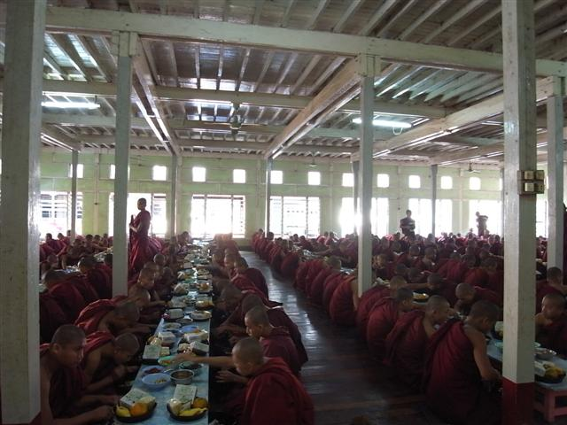
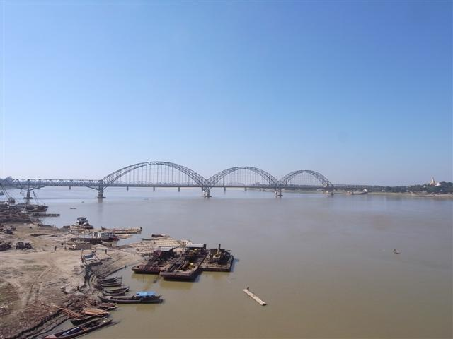
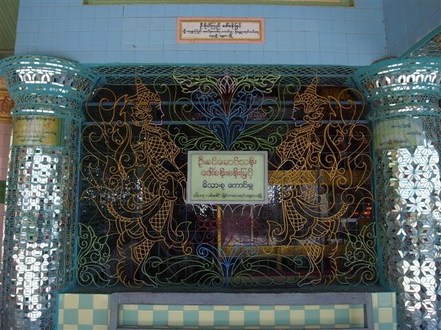

～攝影大師～
如果說位於 Amarapura 的 Maha Ganayon Kyaung 中數百僧人一起靜默地吃早餐是一個奇景，那麼數百遊客如何去「參觀」，就是一個怪相。
是的，我今早看的「景點」，是 Mandalay 以南的 Amarapura 中一所寺院，僧人排隊接收人們捐獻的食物和用品，然後很安靜地到飯堂吃飯。很有趣嗎？我原本也覺是，但去到才發覺沒有什麼比圍觀的遊客的行為更有趣了。
小小的庭園，擠滿了遊客，有些人一早站在高處，有些人則努力地「攝」到不同的位置，個個人都神色凝重，手持那些「巨炮」，卻「近距離」拍攝，捕足 N 分 1 秒的神態。
僧人和工作人員明顯地對這些外來的干擾見慣見熟，不論那些鏡頭，差點就貼到排隊僧人的臉上，或是「隊到埋去」僧人手持的飯桶。
我站在一角，看著整個過程，僧人進入，取飯，再進入飯堂，其間遊客不斷在我前面走來走去，彷彿手上有了專業的攝影器材，就成為了攝影大師，或 Paparazzi 上身，無時無刻按鍵，拍照聲此起彼落。很有趣，這是今天最有趣的景點。
若果拍攝技術高，又何需拍千百張照。
Mandalay 附近的 Ancient Cities，有 Amarapura、Inwa、Mingun、Sagaing 和 Paleik，原本，我打算用兩天時間來遊覽，不過，我突然改變主意，用今天一天時間，只去三個地方。
這和今早電單車司機的說話有點關係，今早他勸我別去 Inwa 改去 Mingun，說 Mingun 是個很特別的地方。去 Inwa 參觀，早已被人定好必要的項目，例如先要坐船，然後坐牛車或馬車，回程又一樣，無論時間或方式，都要因循，其實我也很抗拒這些指定動作，所以改去 Mingun。
而 Sagaing，我也不是逗留很久，那個山，電單車司機載我由不用付錢的入口上山，他曾向我說，這些山，哪裏也一樣，Mandalay Hill 是這樣，Sagaing Hill 也是一樣，千篇一律。
或者真的給他說中我心底話，所以，上完 Sagaing Hill 我很快便下山。在山上買了些小吃，我很喜歡吃的炸蝦餅，和炸魚餅。電單車沿河岸走，走了很多公里之後，到達 Mingun，第一眼見到的，就是那個超大座的 Mingun Paya，的確很特別，司機沒騙我呢。
Mingun 很細小，在 Mingun Paya 前付了入場費，但我懷疑其實根本不付錢也沒人理會，反正我早已被人當作當地人。又要赤腳行了，Mingun Paya 周圍還要是很多沙塵碎石，更要行石梯上去，真是頗痛。上到頂，又遇到三個說自己是學生的人，說為我「帶路」，其實只是有時要手腳並用，才去到一些可以遠眺 Mingun 的地方，之後當然要我付點小費。
黃昏前我們回到 Amarapura 的 U Bein's Bridge，是為了看日落。U Bein's Bridge 的確別有一番景致，橋的兩邊很多小船，當地人不斷來往，在夕陽下，僧袍顏色和周圍色調形成美麗構圖，僧人成為拍攝者的模特兒。
日落後，我們趕快回去 Mandalay，當回到 ET Hotel，旅館職員說老闆找不到我很著急，原來他真的和我「跟進」飛機票，還幫我 confirm 了，怕我去了別處買票，但我又久久未回來，所以整天都很擔心。我原本只想他幫我問問，我還打算明早才買，怎料老闆熱心過頭。幸好他幫我買的票時間地點全合心水，否則都不知如何是好。
Mandalay 夜晚都幾多節目，今晚我去了看 Moustache Brothers Troupe。Moustache 兄弟 Par Par Lay 和 Lu Zaw 是緬甸的笑匠，但卻因為政府連容納一點點諷刺自己的氣度都沒有，多次把 Par Par Lay 收押，打壓他們，嚴禁當地人去看他們的笑話，這些年來，只有外國遊客可以看他們的表演。
就在 2007 年反政府示威，Par Par Lay 又被拘留了五星期。
他們的家像雜物店，牆上掛滿不同東西其中有昂山素姬的相片。說笑的主要是 Lu Zaw，他的笑話主要是諷刺政府的管治，以及現時各地的經濟環境，當中 Made in China 3 Dollars 笑話我只好尷尬地笑。另外 Lu Zaw 太太的傳統舞以及 Par Par Lay 的中國舞才笑到我流淚。
有個環節是 Par Par Lay 扣著鎖要我們拍照，叫我們把照片發放，告訴別人他還未死得。我當時覺得很滑稽，一個多次被人監禁的人，在這裏充滿笑容地擺 pose，感覺怪異。但我回想，連自己傷心的事也拿出來玩，他果然是個笑匠。
ET Hotel - 天福旅店
Maha Ganayon Kyaung


炸物

別人的車
我的車
Mingun - Hsinbyume Paya
Mingun

Mingun Paya
生晒根
U Bein's Bridge

Moustache Brothers House
Lu Zaw
Par Par Lay
Lu Zaw 夫婦
Lu Zaw 妹